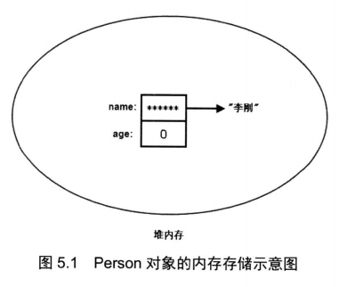

Java 支持面向对象的三大特征：封装、继承、多态；java 提供了public 、protected、private三个访问控制修饰符来实现良好的封装；提供 extends 关键来让子类实例继承父类，使子类可以继承父类的可允许访问控制的属性和方法；通过继承的关系也可实现方法和属性的复用，这时子类对象可以直接赋值给父类变量，这个父类对象便具有了多态性。
类是对象的抽象，对象是类的具体实例。
定义类的简单语法：
[修饰符] 类名 {
定义构造器；
定义成员变量；
定义方法；
}类名的修饰符可以是public、final、abstract或者完全省略不写。示例如下：
//1.String 类
public final class String {}
//2.普通自定义Person 类
public class person {}
//3.抽象类 Animal 类
public abstract Animal{}注意：final 和 abstract 不能同时修饰一个类。因为abstract 修饰的类需要子类继承（实现）才能使用，而 final 是指定类不能被继承，二者相互矛盾。
类里各成员之间的定义顺序没有任何影响，各成员之间可以相互调用，但需要指出的是，static修饰的成员不能访问没有static修饰的成员。
static成员是在JVM的classloader加载类的时候初始化的，而非static的成员是在创建对象，即new 操作的时候才初始化的；类加载的时候初始化static的成员，此时static 已经分配内存空间，所以可以访问；非static的成员还没有通过new创建对象而进行初始化，所以必然不可以访问。
简单点说：静态成员属于类,不需要生成对象就存在了.而非静态成员需要生成对象才产生，所以访问一个还没创建的成
员是不可能的.
Java 中五种创建对象的方式：
/**
1.使用 new 关键字（最常用）；
2.使用反射的Class类的newInstance()方法； //静态工厂方法
3.使用反射的Constructor类的（）newInstance()方法； //静态工厂方法
4.使用对象克隆clone()方法,需要先实现Cloneable接口并实现其定义的clone方法：
5.使用反序列化（ObjectInputStream）的readObject()方法，类必须实现 Serializable接口：
// 前三种都使用到了类的构造方法
*/
import java.io.*;
public class Person implements Cloneable, Serializable {
private String name;
private String adress;
private Boolean aBoolean;
public Person() {}
public Person(String name, String adress) {
this.name = name;
this.adress = adress;
}
/**
* 无参：使用静态工厂方法创建对象
* @return
*/
public static Person getNewInstance() {
return new Person();
}
/**
* 有参：使用静态工厂方法创建对象
* @return
*/
public static Person getInstance(String name, String adress) {
return new Person(name, adress);
}
@Override
public Object clone() throws CloneNotSupportedException {
return super.clone();
}
// 使用 反序列化ObjectInputStream 的readObject()方法：类必须实现 Serializable接口
public Person SerializablePerson() {
Person person =null;
try (
ObjectInputStream ois = new ObjectInputStream(new FileInputStream("d：person.txt"))) {
try {
person = (Person) ois.readObject();
} catch (IOException e) {
e.printStackTrace();
} catch (ClassNotFoundException e) {
e.printStackTrace();
}
} catch (FileNotFoundException e) {
e.printStackTrace();
} catch (IOException e) {
e.printStackTrace();
}
return person;
}
//getter/setter 方法
}当执行 Person person = new Person() 时，实际上产生了两个东西：
当然在创建Person对象时，Person 中的成员变量也有对应的内存。
当一个对象被创建成功以后，这个对象将保存在堆内存中，Java程序不允许直接访问堆内存中的对象，只能通过该对象的引用操作该对象。也就是说，不管是数组还是对象，都只能通过引用来访问它们。
栈内存中引用变量本身只存储了一个地址值，并未包含任何实际数据，该地址值执行了堆内存中的对象，当访问引用变量 p 的成员变量和方法时，实际是访问 p 引用对象的成员变量和方法。
当执行 Person p2 = p 时，实际上是将 p 保存的地址值赋值给了 p2 , p 和p2 指向的都是同一个 Person 对象。
当希望垃圾回收机制回收某个对象时，只需要切断该对象的所有引用变量和它之间的关系即可，即把这些引用变量赋值为 null
this 关键字总是指向调用该方法的对象，this 作为对象的默认引用有两种情形：
public class Employee {
private String employee_id;
private Integer age;
public Employee() {
//在构造器中 引用该构造正在初始化的对象
this.age=18;
this.employee_id="000001";
}
public void say(){
//在方法中引用调用该方法的对象
System.out.println("二狗子，"+this.eat());
}
public String eat(){
return "你妈喊你吃饭啦";
}
}
大部分时候，普通方法访问其他方法、成员变量时无须使用this前缀，但如果方法里有个局部变量和成员变量同名，但程序又需要在该方法里访问这个被覆盖的成员变量，则必须使用this前缀。
方法是类或对象的行为特征的抽象，方法要么属于类（static 修饰的方法），要么属于对象。
java 中的方法不能独立存在，必须属于对象或类，方法的执行必须使用类或者对象作为调用者；
同一个类的一个方法调用另外一个方法时，如果被调方法是普通方法，则默认使用this作为调用者；如果被调方法是静态方法，则默认使用类作为调用者。也就是说，表面上看起来某些方法可以被独立执行，但实际上还是使用this或者类来作为调用者。
Java 里的方法传递机制只有一种 ： 值传递，就是将实际参数值的副本传入方法内，但参数本身不会发生任何影响。
链接：https://www.nowcoder.com/questionTerminal/b296e9e1c40542ec8677c1e452b6b576
来源：牛客网
第一个例子：基本类型
void foo(int value) {
value = 100;
}
foo(num); // num 没有被改变第二个例子：没有提供改变自身方法的引用类型
void foo(String text) {
text = "windows";
}
foo(str); // str 也没有被改变第三个例子：提供了改变自身方法的引用类型
StringBuilder sb = new StringBuilder("iphone");
void foo(StringBuilder builder) {
builder.append("4");
}
foo(sb); // sb中的地址值没有改变，只是sb变量指向的内容变成了"iphone4"。第四个例子：提供了改变自身方法的引用类型，但是不使用，而是使用赋值运算符。
StringBuilder sb = new StringBuilder("iphone");
void foo(StringBuilder builder) {
builder = new StringBuilder("ipad");
}
foo(sb); // sb变量中的地址值没有被改变，所指向的内容还是 "iphone"；参数builder 指向了另一个内存中的"ipad".什么是递归方法：一个方法体内调用它自身，这称为递归方法。
定义递归方法时最重要的一条规定：递归一定要向已知方向递归
《疯狂Java 讲义》 示例一如下：
示例二：
拿示例一说明：已知 f(0) 与 f(4)；如果使用 fn(n+2) - 2fn(n+1)，那么传入参数 n = 10 是永远无法得到结果的。因为 fn(n+2) - 2fn(n+1) 一直在循环，只有往 f(0) 与f (4) 的方向递归才能得到结果。
Java允许同一个类里定义多个同名方法，只要形参列表不同就行。如果同一个类中包含了两个或两个以上方法的方法名相同，但形参列表不同，则被称为方法重载。
Java 中根据定义变量位置的不同，可分为全局(成员)变量和局部变量。
封装指的是将 对象的状态信息隐藏起来，不让外部应用直接对象内部信息，而是通过该类提供的方法来对内部的访问和操作。
总结来说，封装的目的就是两点 ：
如果类里的一个成员（包括成员变量、方法和构造器等)使用private 访问控制符来修饰，则这个成员只能在当前类的内部被访问。
如果类里的一个成员(包括成员变量、方法和构造器等）或者一个外部类不使用任何访问控制符修饰，就称它是包访问权限的，default访问控制的成员或外部类可以被相同包下的其他类访问。
如果一个成员（包括成员变量、方法和构造器等）使用protected访问控制符修饰，那么这个成员既可以被同一个包中的其他类访问，也可以被不同包中的子类访问。在通常情况下，如果使用protected来修饰一个方法，通常是希望其子类来重写这个方法。
如果一个成员(包括成员变量、方法和构造器等)或者一个外部类使用public访问控制符修饰，那么这个成员或外部类就可以被所有类访问。
每一个Jar 包提供的 类都有很多，很可能和别的jar 中的类 命名重复，故需要引入package 的概念解决 命名冲突的问题
在引入 packege 后，在一个类中引入 其他 packege 中的方法 我们可以这样操作
com.myt.domain.Person p = new com.myt.domain.Person();但是 在调用不同package 中的类时总是需要 写该类的全名，则是非常繁琐的，故，为了简化代码，引入 import，import 可以导入指定包下的某个特点的类或者全部类。
构造器是创建对象的重要途径（静态工厂方法以及反射等方式都是通过构造器来创建对象的），故Java类中必须包含一个或者一个以上的构造器。
构造器最大的作用就是在创建对象时执行初始化，即在 new Person() 时，将对象中所有的基本类型的示例变量设置为0 ，所有的引用类型设置为 null 。当然如果想改变这种默认设置，在创建对象变量时显示的指定初始值即可。
一个类可以有多个构造器，这就形成了构造器重载。因为构造器通常需要被别的方法调用，故构造器设置成 public 访问权限，允许从任何位置的类通过构造器来创建对象。但在一些其他业务情况下，需设置为其他的访问权限，比如单例模式，需设置为 private 访问权限，只允许该类本身创建对象。或者设置为 protected ，仅允许被其之类调用。
当类中的一个构造器（A）的执行体完全包含了另一个构造器（B）的执行体,则可以直接在 A构造器值使用 this 关键字来直接调用 B 构造器。
package com.myt.bean;
import com.ivo.domain.Person;
public class Employee extends Person {
private String employee_id;
private String address;
public Employee() {}
//自定义构造器
public Employee(String employee_id) {
this.employee_id = employee_id;
}
//自定义构造器 --> this
public Employee(String employee_id, String address) {
// this 调用的构造器必须在第一位
// 不可直接使用 new Employee(employee_id)，这会产生两个对象
this(employee_id);
this.address = address;
}
}
Java 是单继承的，每个子类只能继承一个父类（基类或者称超类）。
子类继承了父类，将获得父类的所有成员变量和方法，注意 父类被 private 修饰的变量和方法可以继承但不能直接使用，子类也不能继承父类的构造器。
子类包含与父类相同名称的方法，这种情况称为方法重写（覆盖）。
如果在子类需要访问父类中被重写方法，则可以使用 super(父类方法名) 或者 父类类名(父类方法名) 这样的形式来调用
可使用super 关键字来调用父类被子类覆盖的方法。
可使用 super 关键字调用父类的构造器。
当父类没有默认的构造器时，子类构造器必须显示的调用父类构造器。
在Java继承体系中，父类必须先于子类初始化，故存在两种情况：
package com.myt.bean;
import com.myt.domain.Person;
public class Employee extends Person {
private String employee_id;
private String address;
public void foo4(){
this.foo5();
super.foo2();
}
public void foo5(){
System.out.println(111);
}
//自定义构造器 --> super
public Employee(String name, String age, String employee_id, String address) {
super(name, age);
this.employee_id = employee_id;
this.address = address;
}
}Java 的引用变量有两种类型
如果编译时类型和运行时类型不一致，就可能出现多态。
public class Base {
public void methodOne() {
System.out.print("A");
methodTwo();
}
public void methodTwo() {
System.out.print("B");
}
}
public class Derived extends Base {
public void methodOne() {
super.methodOne();
System.out.print("C");
}
public void methodTwo() {
super.methodTwo();
System.out.print("D");
}
}
public class mainTest {
public static void main(String[] args) {
//编译时类型为 Base ； 父类引用指向子类对象 （向上转型）
Base base = new Derived();
//编译时是由 base 调用该方法，但运行时是 Derived 对象调用该方法
//所以第一次执行先调用Derived 的 methodOne()
base.methodOne();
}
}
}执行结果 ：A 、B、D、C
执行过程：
引用变量只能调用它编译时类型的方法，而不能调用它运行时类型的方法，即使它实际所引用的对象确实包含该方法。如果需要让这个引用变量调用它运行时类型的方法，则必须把它强制类型转换成运行时类型，强制类型转换需要借助于类型转换运算符。
public class Test {
public static void main(String[] args) {
Person p = new Employee();
// foo2() Person 独有的方法
p.foo2();
// foo() Employee 类中重写了
p.foo();
// foo4 Employee 独有方法，故需强转
((Employee) p).foo4();
}
}
instanceof 运算符左边通常是一个引用变量，右边是一个类或者接口；它用于判断 这个引用变量指向的对象是不是右边的类或者是该类的子类，或实现类。
public class Test {
public static void main(String[] args) {
Object obj ="hello";
System.out.println( obj instanceof Object ); //true
Person p = new Employee();
System.out.println( p instanceof Employee); //true
// Employee emp = (Employee) new Person();
// System.out.println(emp instanceof Person);// ClassCastException
//想让父类强制转换成子类，不是没有可能，除非父类是子类构造出来的实例，不然是不能强转的
Employee emp2 = (Employee) p;
System.out.println(emp2 instanceof Person); //true
}
}Person p = new Employee(); Employee emp = (Employee) new Person(); //报错： ClassCastException
//想让父类强制转换成子类，不是没有可能，除非父类是子类构造出来的实例，不然是不能强转的
Person p = new Employee();
Employee emp2 = (Employee) p;初始化块和构造器的作用类似，可以对Java 对象进行初始化。
初始块的修饰符只能是static ,被static修饰的称之为静态代码块，先执行代码块，再执行构造器。
public class CodeblockTest {
public static void main(String[] args) {
new Leaf();
System.out.println("--------------------------");
new Leaf();
}
}
class Root{
static {
System.out.println("root 静态初始化块");
}
{
System.out.println("root 普通初始化块");
}
public Root(){
System.out.println("root 无参构造");
}
}
class Mid extends Root{
static {
System.out.println("mid 静态初始化块");
}
{
System.out.println("mid 普通初始化块");
}
public Mid(){
System.out.println("mid 无参构造");
}
public Mid(String msg){
this(); //使用this 调用类中构造器
System.out.println("mid 无参构造 "+msg);
}
}
class Leaf extends Mid{
static {
System.out.println("Leaf 静态初始化块");
}
{
System.out.println("Leaf 普通初始化块");
}
public Leaf(){
super("测试"); //使用super 调用父类构造
System.out.println("Leaf 无参构造");
}
}输出顺序 ：
root 静态初始化块
mid 静态初始化块
Leaf 静态初始化块
root 普通初始化块
root 无参构造
mid 普通初始化块
mid 无参构造
mid 无参构造 测试
Leaf 普通初始化块
Leaf 无参构造
---------------------------------------
root 普通初始化块
root 无参构造
mid 普通初始化块
mid 无参构造
mid 无参构造 测试
Leaf 普通初始化块
Leaf 无参构造总结 ：